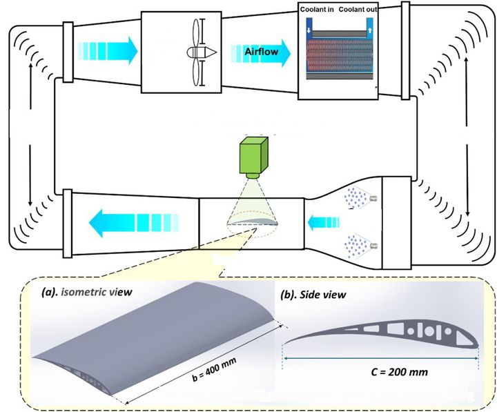
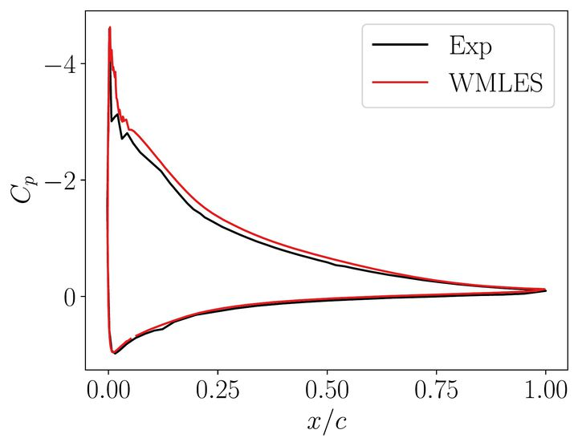

Featured record
One test case, five data products, one FROST record
Rime and glaze ice grown on an S1223 UAV wing in the ISU-IRT, followed through every product it has generated, and linked into a single machine-readable record.
Today: five separate products
Scattered across papers, folders, and groups
Together these describe the ice, its aerodynamic penalty, and the airflow more completely than any one of them. Today they live in separate places.

PRODUCT 1
ISU-IRT icing run + 3D scan
S1223, c = 200 mm, b = 400 mm; ice laser-scanned to an STL.
PRODUCT 2
Replica loads · Cp · PIV
Re = 2.65×10⁵, AoA 0° and 5°; load cell, 42 taps, 500 PIV pairs per case.
PRODUCT 3
Surface pressure
Clean vs. rime-iced pressure distributions from the 3D-printed replica.Linked external record
PRODUCT 4
External RANS
RANS of every scan, 7.9–11.8 M cells, under 1 h per case (University of Tokyo).
PRODUCT 5
ISU wall-resolved LES
346 M unknowns on one GPU, filling the region PIV cannot see.
In FROST: one record
Linked, harmonized, and completed
A pilot pass by LLM agents, the prototype of Aim 1.1, has already assembled this case into one machine-readable record. Linking does more than collect files:
- The tunnel's ~3% inflow turbulence becomes metadata available to every simulation that uses the data.
- The region below the wing that PIV cannot see is completed by validated simulation, tagged as synthetic, with uncertainty.
- The solver's own validation record travels with it: WMLES surface pressure matches IRT measurements on scanned glaze ice.
- Every file is hashed, every derived value has W3C PROV lineage, and a curator signs the release.

Linked solver validation: WMLES vs. IRT Cp on glaze ice.frost://icing/airfoil/S1223/rime/aoa00 · v1.0
geometry : S1223 UAV airfoil · c = 0.200 m 3D ice scan (150 µm) linked icing : V = 20 m/s · T = −15 °C · LWC = 0.5 g/m³ t = 463 s · regime = rime test : Re = 2.65e5 · AoA = 0/5° · Tu = 3% ← linked facility record fields : ice.stl ✓ loads(CL, CD) ✓ Cp[42] ✓ PIV[500 pairs, shadow-masked] ✓ completed : lower-surface u, Cm ← validated LES, tagged synthetic links : ISU-LES · UTokyo-RANS doi:10.2514/6.2026-0887 provenance: sha256 per file · W3C-PROV chain CC-BY-4.0 · curator-signed DataCite DOI at release
pythonPlanned interface · v0.5
import frost rec = frost.get("icing/airfoil/S1223/rime/aoa00") rec.ice.to_mesh() # scanned STL rec.piv.u, rec.piv.mask # shadow never mistaken for data rec.completed.u.origin # "synthetic-validated" frost.cite(rec) # DOI + source papers
Benchmark in v0.5
A benchmark, not just a record
The S1223 record anchors FROST-Bench task T2: complete the PIV shadow from partial observations, with calibrated uncertainty.